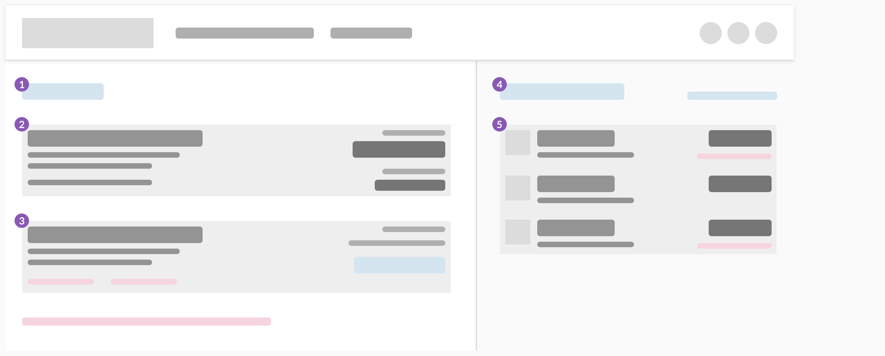
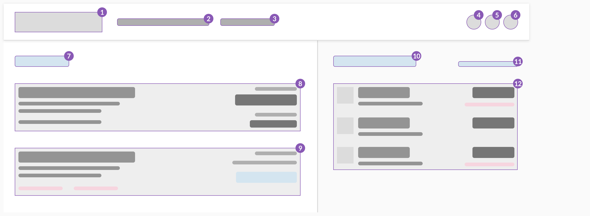
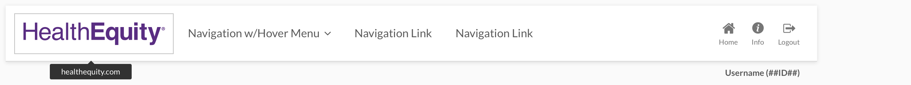
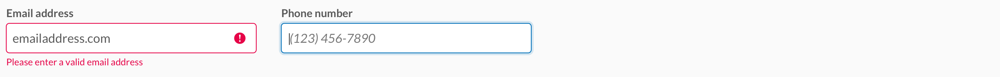

Our products and web portals should be accessible to everyone, including those with vision, hearing, cognitive, and motor impairments. Accessible design lets people of all abilities interact with, understand, and navigate our products.
Consistent, clear hierarchy helps users who navigate the page using links or headers. Use headings and titles to outline the page so that users can see the structure and how the sections relate. Give users feedback so they know where they are in the application.
Place items on the page in order of their level of importance so that users don't have to search for them.
Create and maintain a consistent hierarchy so that users can use alternative input methods to move through the page. Try and keep headings in order without skipping levels. (h1, h2, h3, h4)
Test the UI with color correction, magnification, and other accessibility settings to ensure the layout works with assistive settings.
Group items under titles or headings that clearly communicate the content of the group.
By combining many units of information into a limited number of units or chunks, the information becomes easier to process and remember. Use the estimate of 4 ± 1 when the information isn't going to be searched or scanned.
Some users can't use a mouse, and instead navigate through applications using tools such as a keyboard, mouth wand, or eye tracking system. Users should be able to navigate and use the product with a keyboard or screenreader. Make sure anything users can see by hovering with a mouse is also accessible to keyboard focus and screenreaders.
When creating an application, ask yourself whether you can use a keyboard to:
Keyboard focus follows the page as the eye would scan it. Focus travels top to bottom, left to right, moving from most to least important item. Users can navigate applications using alternative input methods (D-pads, trackballs, keyboards, and navigation gestures), and the focus flows in a logical order.
Users can activate tooltips by keyboard. When an element gets keyboard focus, a tooltip displays. When that element loses focus, the tooltip disappears.
Validate forms in-line so keyboard users don't have to navigate far to get feedback.
Consistent and helpful text makes the user interface accessible to users who use a screen reader. Screen readers help users with visual impairments by reading both visible and non-visible alternative text aloud.
All text should support accessibility, whether it's visible (UI labels, headings, buttons, forms, hyperlinks, and help text) or non-visible (alternative text for images and buttons).
Keep content and accessibility text concise. People using screen readers hear every UI element read aloud, so the shorter the text, the faster they can navigate the content.
Consistently label elements and components that have the same functionality. When users encounter these elements in different contexts, they should easily recognize and understand the function or actions of an element. For instance, a menu item that is labelled Expenses should open a page that is titled Expenses. A dialogue with the title Copy page has a button labeled Copy.
Label elements with action verbs that indicate what happens when the element is selected.
In buttons, describe what the action does, and if possible, reveal what will happen.
Hyperlinks should indicate where the user will go when they select the link.
Describe non-text elements in the UI or with alternative text so that screen readers can succinctly describe images and media.
If an image contains information that can only be understood by seeing the image, then you need to explain the content of the image using alternative text. Follow these guidelines when you write alt text:
If the image is used strictly to make the page pleasant to the eye, doesn't contain a link, and isn't used to deliver information, then include the alt attribute, but leave it empty. For example, alt=""
Provide transcripts and in-sync captioning. Make sure users can control when the video or gif starts and stops.
We comply with AA standard contrast ratios. To do this, we choose primary, secondary and extended colors that support usability. This ensures sufficient color contrast between elements so that users with low vision can see and use our products.
Don't convey information using color alone. Use multiple visual cues, such as stroke weight, patterns, shape, text, or illustrations to ensure that all users receive the same information.
This helps users who are unable to, or have difficulty with, distinguishing one color from another. This includes people who are color blind, have low vision, or are blind.
High color contrast helps users who are partially or completely color-blind see differences between certain colors. It creates a strong visual hierarchy and improves usability for everyone. Make sure that the combination of text and background color do not fall below the WCAG recommended threshold ratio of 4.5:1 for standard text and 3:1 for larger text.
Decorative images and disabled states don't have contrast requirements.
AA passes 4.51:1
AA fails 2.11:1
AAA passes 9.96:1
AA fails 2.78:1
AA passes 5.23:1
AA fails 2.38:1
These guidelines will help improve accessibility in your applications, but they don't guarantee a fully accessible experience. We also recommend that you:
When in doubt, refer to the following guidelines: